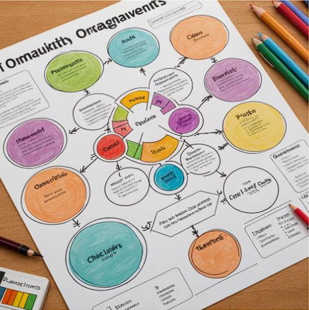
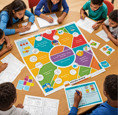

1. Mejora de la Memoria Visual
Los organizadores gráficos son herramientas que aprovechan la capacidad del cerebro humano para procesar información visual. Al representar conceptos e ideas en formatos visuales, como diagramas, mapas y cuadros, puedes reforzar tu memoria visual
Características
Asociaciones Visuales: Las imágenes y diagramas crean asociaciones mentales que facilitan el recuerdo. Por ejemplo, un mapa conceptual que muestra cómo se relacionan diferentes elementos de un tema puede ayudar a los estudiantes a recordar esos elementos más fácilmente.
2. Fomento de la Comprensión Crítica
Los organizadores gráficos no solo ayudan a recordar información; también fomentan una comprensión crítica al permitir a los estudiantes.
Características:
Identificar Patrones: Los organizadores gráficos ayudan a identificar patrones y tendencias dentro de la información, lo que es fundamental para el análisis crítico. Por ejemplo, un diagrama de flujo puede mostrar cómo un proceso se desarrolla a lo largo del tiempo.
3. Desarrollo de Habilidades Organizativas
El uso de organizadores gráficos promueve habilidades organizativas esenciales que son valiosas en tul ámbito académico
Características
Estructuración Lógica: Los organizadores gráficos te ayudan a pensar críticamente sobre cómo organizar la información. Al momento de decidir qué ideas son más importantes y cómo se relacionan entre sí, lo que mejora tu capacidad para estructurar información lógica.
 